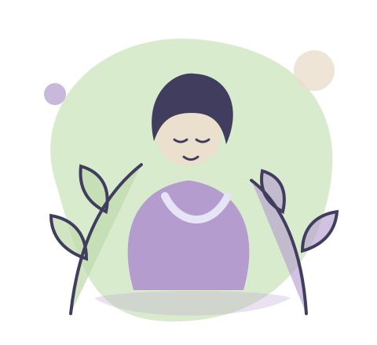

Recursos
Artigos, exercícios e sugestões práticas para compreenderes melhor as tuas emoções e promoveres o teu bem estar.
Ver estado dos recursosUm espaço para ti
Um lugar tranquilo para ouvires o que sentes e dares espaço ao teu bem-estar.
Explora ferramentas de autocuidado, regista os teus pensamentos e avança ao teu ritmo.

Nem todos os dias são iguais. Há dias leves e dias mais difíceis. O importante é encontrares espaço para te ouvires, compreenderes o que sentes e cuidares de ti sem pressões.
Encontra ferramentas que te ajudam a cuidar de ti, ao teu ritmo.
Artigos, exercícios e sugestões práticas para compreenderes melhor as tuas emoções e promoveres o teu bem estar.
Ver estado dos recursosEscreve, reflete e regista o que sentes. Um espaço pessoal para acompanhares o teu progresso emocional.
Abrir diárioConsulta as opções de mensagem e pedido de consulta disponíveis nesta versão.
Conhecer opçõesDescobre um espaço de partilha, apoio e compreensão, onde cada pessoa pode encontrar o seu lugar.
Descobrir comunidadeOs artigos e exercícios ainda não estão disponíveis nesta versão. Não apresentamos conteúdos como se tivessem sido revistos por profissionais.
Escreve o que sentes, reflete e acompanha o teu crescimento.
Um espaço pessoal associado à tua conta. Inicia sessão para consultar ou guardar as tuas entradas.
As entradas ficam guardadas apenas neste browser; usa dados fictícios nesta demonstração.
Por vezes, falar com alguém pode ajudar a ver as coisas de outra forma. Descobre as opções de apoio disponíveis e escolhe aquela com que te sentes mais confortável.
As mensagens ficam guardadas localmente nesta demonstração e não são enviadas a uma equipa.
Abrir demonstraçãoRegista uma data pretendida para veres o pedido na área de administração. Não marca uma consulta real.
Ver demonstraçãoEm situação de emergência, liga para o 112.
As mensagens e respostas são guardadas apenas neste browser. Não são enviadas a uma equipa nem constituem apoio profissional.
A verificar se o serviço de mensagens está configurado…
Se estiveres em perigo imediato, liga 112.
Regista uma data e uma preferência de horário para experimentar o painel de administração. Isto não marca uma consulta real.
Não são indicados profissionais, horários disponíveis ou preços nesta plataforma. Em situação de emergência, liga 112.
Cada pessoa vive desafios diferentes. Um espaço de partilha pode ajudar-nos a sentir que somos compreendidos e que não precisamos de ter todas as respostas.
A comunidade ainda não tem publicações, membros ou ferramentas de partilha disponíveis.
Há espaço para parar, respirar e recomeçar ao teu ritmo.
Fazer uma pausaNão precisas de mudar tudo de uma vez. Dá o primeiro passo e descobre ferramentas que te podem ajudar a compreender melhor o que sentes.
Começar agoraUm passo de cada vez. Ao teu ritmo.A Mente Leve é uma plataforma digital dedicada ao autocuidado e ao bem-estar emocional. O diário permite guardar entradas privadas numa conta; o formulário de consulta regista pedidos pendentes, sem verificar disponibilidade em tempo real.
A biblioteca de recursos e a comunidade ainda não estão disponíveis. As mensagens são assíncronas e só ficam ativas quando a equipa as configura. A Mente Leve não presta cuidados de saúde, não substitui um profissional e não é um serviço de emergência.
Cria uma conta para guardar o teu diário com privacidade e aceder aos teus pedidos.
Experimenta o formulário; os dados ficam apenas neste browser e não são enviados. Não introduzas informação real ou sensível.
O formulário não é monitorizado em tempo real nem serve para situações urgentes. Em perigo imediato, liga 112.
Podes criar uma conta de demonstração, guardar entradas no diário e experimentar pedidos de consulta, mensagens e contactos. Estes formulários não enviam dados para uma equipa.
Os dados ficam no armazenamento local deste browser. Não são enviados para um servidor, mas qualquer pessoa com acesso a este browser e aos seus dados pode consultá-los. Não uses informação pessoal ou sensível.
Não. O formulário só cria um pedido de demonstração guardado neste browser; não é enviado nem marca uma consulta.
Não. As mensagens desta demonstração ficam apenas neste browser; não são enviadas a profissionais de saúde e não são monitorizadas.
A recuperação não está disponível. Para começar de novo, usa o botão de reinício na área de administração; isso apaga todos os dados locais desta demonstração.
Não. A plataforma não é um serviço de emergência ou de saúde. Em perigo imediato, liga 112.
Texto informativo inicial. Deve ser revisto por quem opera a plataforma antes do lançamento.